Work / Smart Furniture / Tangible interaction
FILO
The wardrobe is the most public object in every home; everyone passes it, everyone uses it. FILO is an add-on that turns it into a place for private messages, delivered exactly where and when they’re supposed to be heard.

Public space, private message
Household messages fail in both directions: notes on the fridge are public to every guest, and texts arrive at the wrong moment entirely. We wanted to design a product that lets you place and share messages in and around the wardrobe, heard right at the moment of leaving or arriving, the moments they are about.
Because the wardrobe is so public, privacy became the core design tension: how do you leave a personal message in the busiest spot of the home without broadcasting it?
The keychain is the key
The answer was tangible: individual keychain hangers with distinct designs and stencils that each person carries with their keys. Hanging your keychain is both identity and intent, messages addressed to you find you, and only you, while the object on the rail stays perfectly ordinary.
- Personal keychains give each family member a private channel inside a shared object.
- Placement in the wardrobe ties messages to the natural moments of leaving and arriving.
- An ordinary appearance keeps the private layer invisible to visitors.
A message is private not because it’s encrypted, but because it arrives only for you, right where it was meant to be heard.design intent, FILO
Prototyped until it belonged
After multiple brainstorming and design thinking sessions we moved straight into rapid prototyping, testing iteration after iteration until the result satisfied. I designed the product end to end, from laser-cut housing to 3D-printed parts, and designed the interaction that ties keychain, wardrobe, and message together.
Making FILO
FILO is an add-on, so the first question was what to add it to. We weighed the everyday objects people already live with, then committed to the clothes rail, the most public surface in the home, and built the housing for it: laser-cut MDF panels, 3D-printed listening horns, and stenciled keychains, tested and mounted until it belonged there.
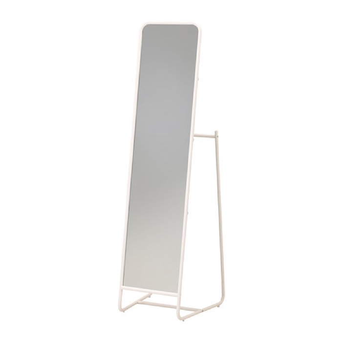
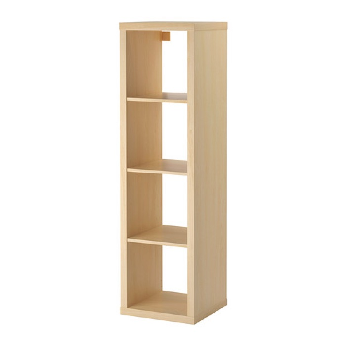
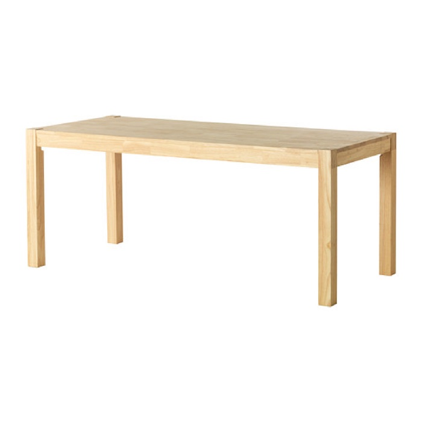
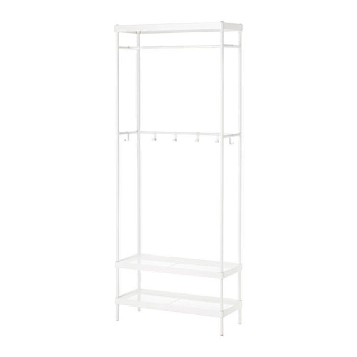
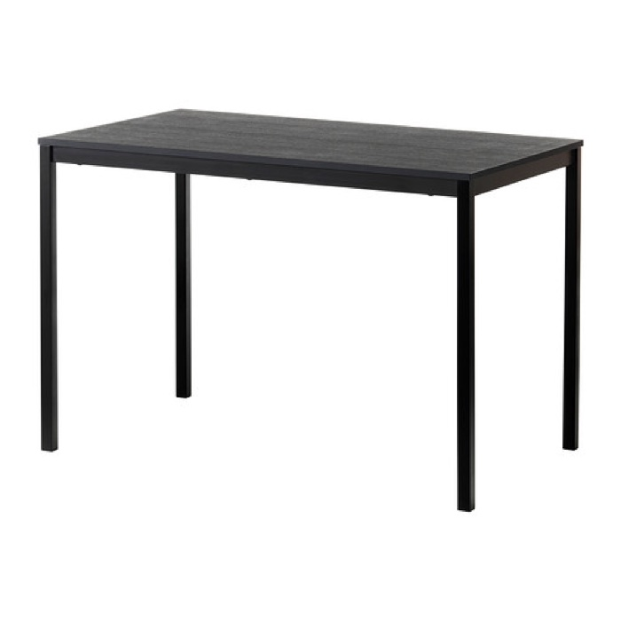
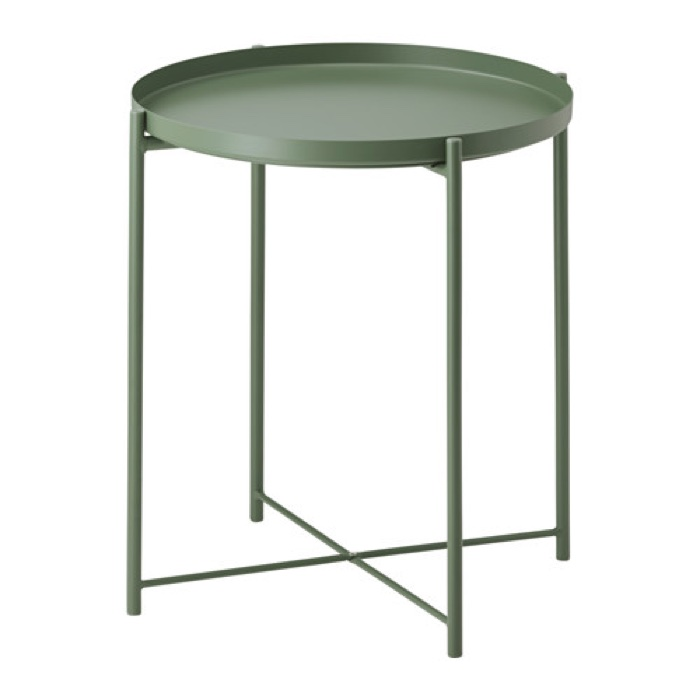
The everyday objects we weighed before settling on the wardrobe rail.
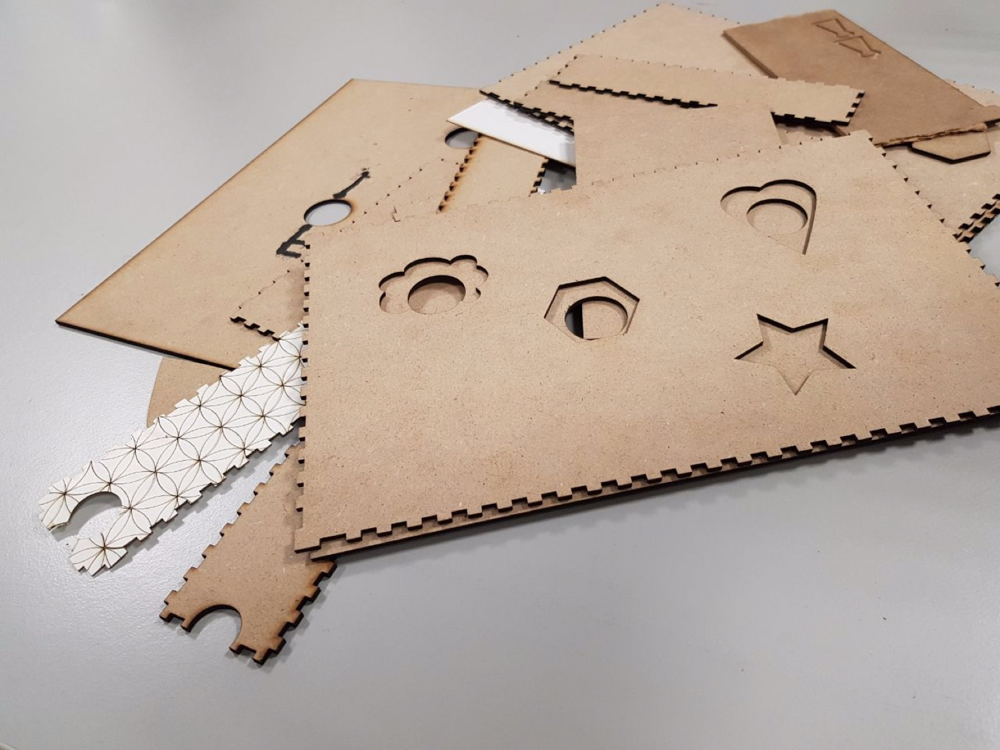
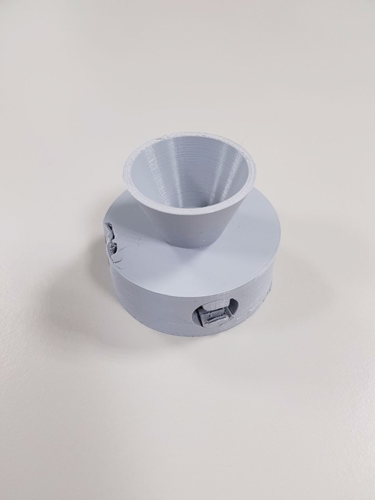
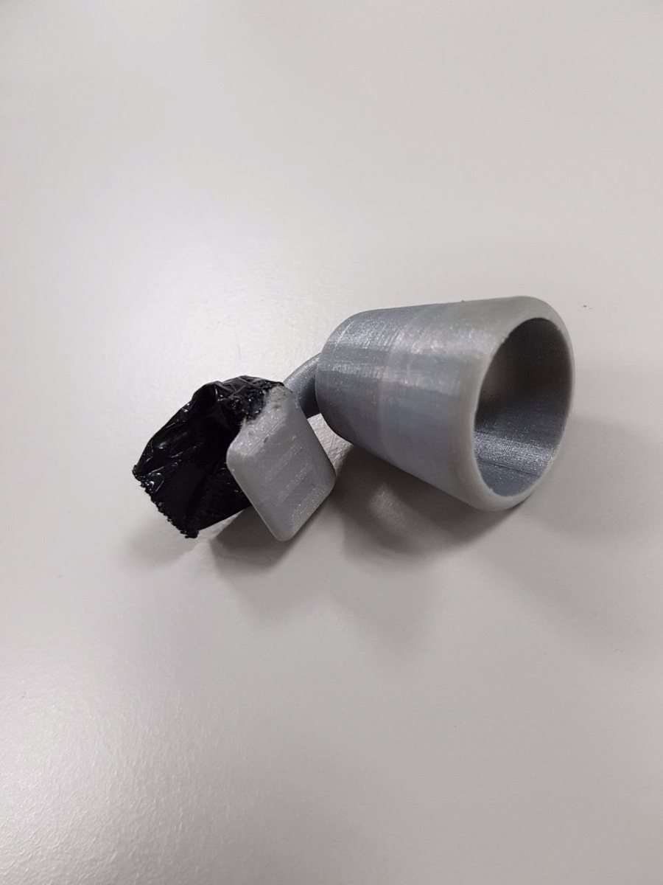
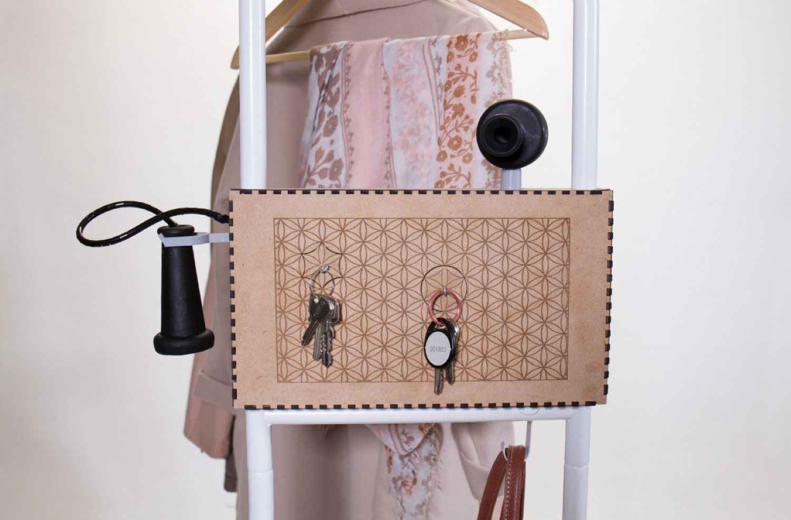
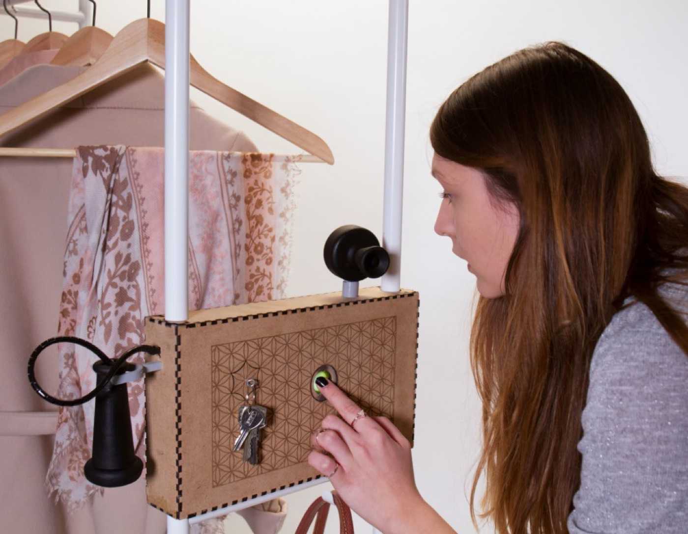
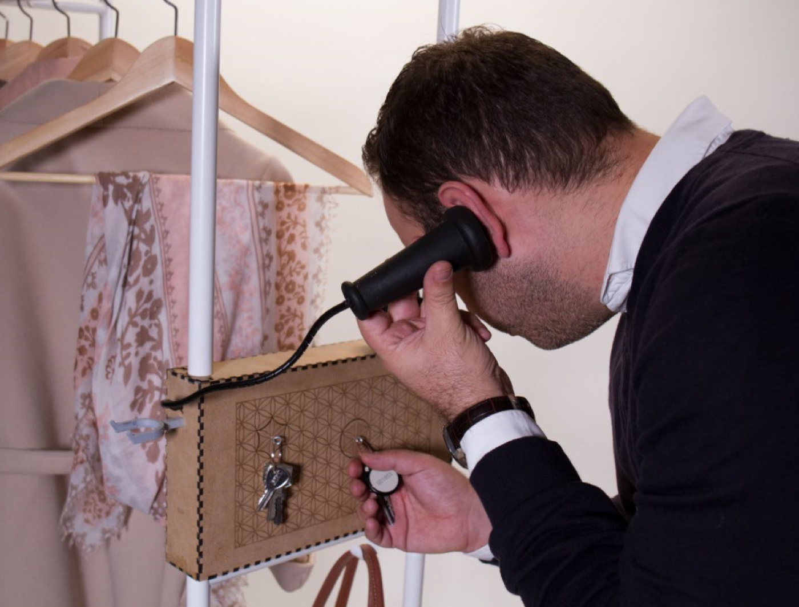
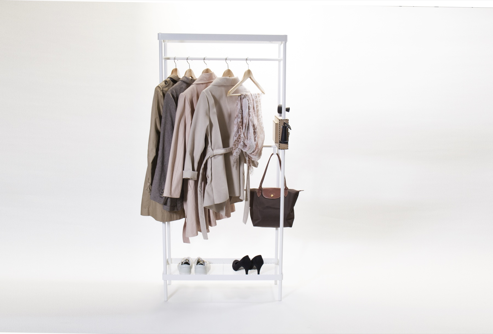